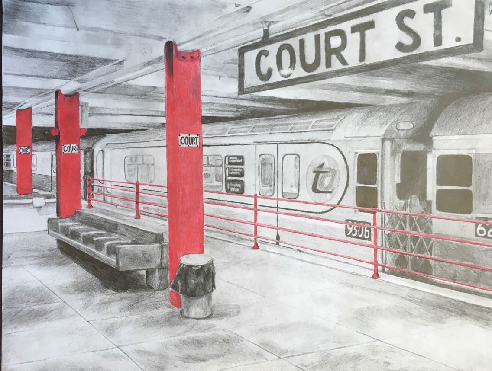

Laser Cut Sparkfun Box
I drew in AutoCAD and laser cut a case for Sparkfun Redboard breadboard using clear acrylic. Click below to see more of my engineering projects.

Mixed Media Drawing
A drawing of a subway station using colored pencil and graphite. Click below to see more of my art projects.